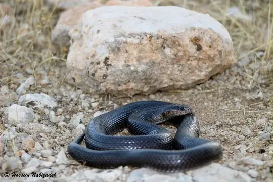
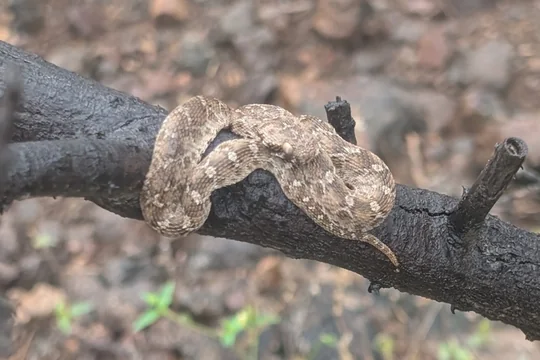
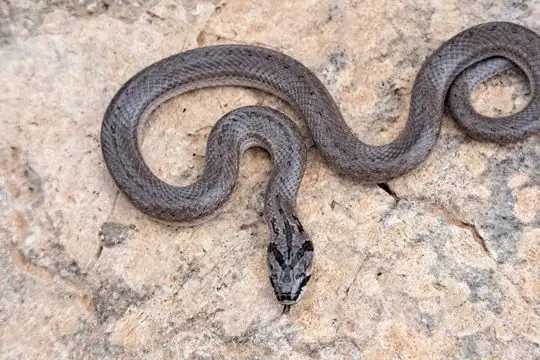
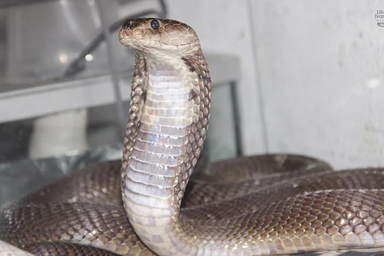
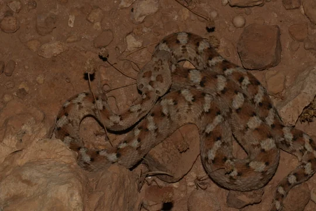
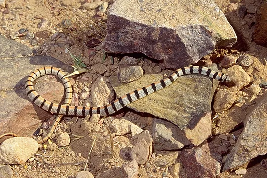

Snakes of Egypt
30 living snake species are recorded in Egypt in SnakeList: 15 venomous and 15 non-venomous, from 9 families. 1 fossil species found here is listed separately and not counted.
- 30living species
- 9families
- 1fossil, not counted
Danger to people · tap a number to show only those snakes
- 0giant constrictors
Harmful = dangerously venomous + giant constrictors. Harmless = not venomous and not a giant constrictor. Mildly venomous snakes have no serious bites to people documented. Any snake can bite.
These totals count the unique living snake species SnakeList records in Egypt; the 1 fossil species found here is listed separately and not counted. A species counts if it is recorded anywhere in the country, so not every snake lives in every part of it.
In SnakeList’s checklist filters
How many of the 30 living species here each filter in the SnakeList app picks out – tap a number to show only those snakes. The app’s own counts for Egypt also include the 1 fossil species listed separately below.
Snake family5 types, 9 families
Type
Family
Habitats15 habitat groups
Habitats are estimated from where each snake is recorded and what kind of snake it is, as in SnakeList; a snake can count in several.
Characteristics15 venomous, 2 constrictors
Constrictor and Non-constrictor count only snakes whose family or genus is documented as constricting or not; the rest are not documented.
Other filters2 popular, 3 rare
Species
Showing 30 species
 African CobraNaja pallida
African CobraNaja pallida Algerian Whip SnakeHemorrhois algirus
Algerian Whip SnakeHemorrhois algirus Awl-headed SnakeLytorhynchus diadema
Awl-headed SnakeLytorhynchus diadema Brahminy BlindsnakeIndotyphlops braminus
Brahminy BlindsnakeIndotyphlops braminus Cairo Blind SnakeMyriopholis cairi
Cairo Blind SnakeMyriopholis cairi Cape Wolf Snake (capense)Lycophidion capense
Cape Wolf Snake (capense)Lycophidion capense Crowned Dwarf RacerEirenis coronella
Crowned Dwarf RacerEirenis coronella
Desert CobraWalterinnesia aegyptia Desert Horned ViperCerastes cerastes
Desert Horned ViperCerastes cerastes Egyptian CatsnakeTelescopus obtusus
Egyptian CatsnakeTelescopus obtusus Egyptian CobraNaja haje
Egyptian CobraNaja haje- No photo yetEgyptian Egg-eaterDasypeltis bazi

Egyptian Saw-scaled ViperEchis pyramidum
False Smooth Snake (cucullatus)Macroprotodon cucullatus Field's Horned ViperPseudocerastes fieldi
Field's Horned ViperPseudocerastes fieldi Flowered RacerPlatyceps florulentus
Flowered RacerPlatyceps florulentus Israeli Mole ViperAtractaspis engaddensis
Israeli Mole ViperAtractaspis engaddensis Moila SnakeMalpolon moilensis
Moila SnakeMalpolon moilensis
Nubian Spitting CobraNaja nubiae Olive Grass RacerPsammophis phillipsii
Olive Grass RacerPsammophis phillipsii
Palestine Saw-scaled ViperEchis coloratus Rogers' RacerPlatyceps rogersi
Rogers' RacerPlatyceps rogersi Sahara RacerPlatyceps saharicus
Sahara RacerPlatyceps saharicus Sahara Sand ViperCerastes vipera
Sahara Sand ViperCerastes vipera Saharan Sand SnakePsammophis aegyptius
Saharan Sand SnakePsammophis aegyptius Sand BoaEryx colubrinus
Sand BoaEryx colubrinus Sand Boa (jaculus)Eryx jaculus
Sand Boa (jaculus)Eryx jaculus
Sinai RacerPlatyceps sinai Speckled Sand RacerPsammophis punctulatus
Speckled Sand RacerPsammophis punctulatus Striped Sand SnakePsammophis sibilans
Striped Sand SnakePsammophis sibilans
No snakes in Egypt match.
Fossil snakes found here
This snake is known only from fossils found in Egypt. It is not a living species and is not counted in this page’s totals. The geological age given is approximate: it comes from the rock layers the fossils were found in, and the dating and classification of fossil snakes are revised as new material is studied.
- Gigantophis Gigantophis garstini (late Eocene, about 37 million years ago)
Egypt’s snakes in numbers
- Families: Colubridae 10, Psammophiidae 5, Viperidae 5, Elapidae 4, Boidae 2, Atractaspididae 1, Lamprophiidae 1, Leptotyphlopidae 1, Typhlopidae 1.
- 1 is recorded in no other country or territory in SnakeList: Egyptian Egg-eater.
How precisely they are recorded
Of the 30 living species recorded in Egypt, 11 are recorded by governorate in SnakeList’s data; 19 are recorded only for Egypt as a whole, so the governorate pages list them as possible rather than recorded. SnakeList records each species by governorate, not by exact spot, so a species listed for a governorate may live in only part of it.
Governorates
The governorates where SnakeList records snakes, with how many living species are recorded in each. Each page has its species, venomous snakes, families, the species found only there, its cities and neighbours.
- Aswan 3 species
- Cairo 1 species
- Faiyum 1 species
- Giza 1 species
- New Valley 2 species
- North Sinai 4 species
- Qena 2 species
- Red Sea 4 species
- South Sinai 3 species
No place matches that.
Cities
Its biggest cities, biggest first. SnakeList records snakes by governorate, not by city, so each city page shows the species recorded in its governorate and, separately, those only possible there - not species confirmed in the city.